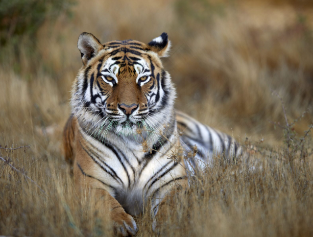
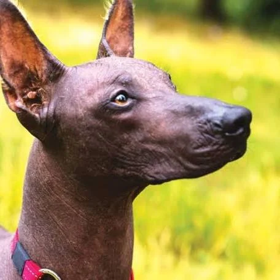
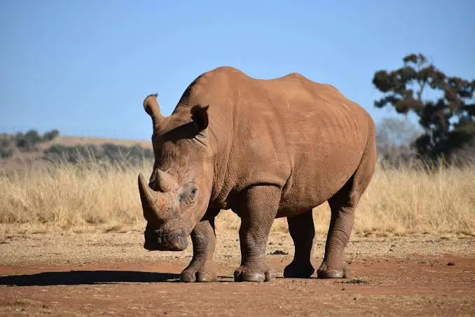
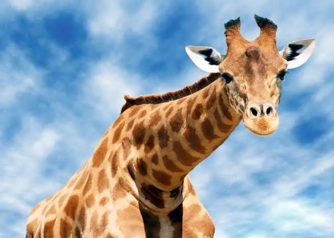

AXEL HERNÁNDEZ
Realicé esta tabla de mis animales preferidos con una pequeña imagen y descripción.
| ANIMALES | DESCRIPCIÓN | IMAGEN |
|---|---|---|
| TIGRE | El tigre (Panthera tigris) es el felino más grande del mundo, reconocido por su pelaje naranja con rayas negras únicas. Es un excelente nadador y tiene hábitos solitarios. Se encuentra en peligro de extinción. |
 |
| QUETZAL | El quetzal es un ave de Mesoamérica famosa por su plumaje verde brillante y pecho rojo. Es un símbolo cultural importante y está amenazado. |
|
| XOLOITZCUINTLE | El xoloitzcuintle es un perro mexicano sin pelo, muy antiguo y ligado a la cultura mexica. |
 |
| RINOCERONTE | El rinoceronte es un mamífero grande y fuerte con uno o dos cuernos en la nariz. Se encuentra en peligro debido a la caza furtiva. |
 |
| JIRAFA | La jirafa es el animal terrestre más alto del mundo, con un cuello largo que le permite alcanzar hojas en árboles altos. |
 |